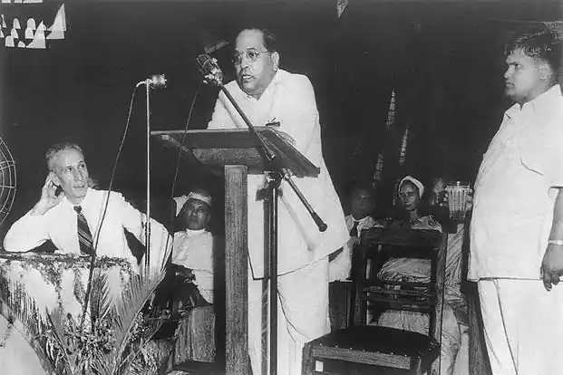

Mint' has been writing about Ambedkar's legacy over the last year; Here's our reading list on Dr. Ambedkar
Here's a time line of Dr. BR Ambedkar's life:
1891 - Born in Mhow, Madhya Pradesh
1897 - Ambedkar's family moved to Mumbai where Ambedkar became the only untouchable enrolled at Elphinstone High School.
1906 - When he was about 15 years old, he married a nine-year-old girl, Ramabai. The match per the customs prevailing at that time was arranged by the couple's parents.
1921 - He moved back to London to complete his law studies in 1921 and was admitted to the British bar as a barrister. He returned to India and started practising as a legal professional in the country. He established a society called ‘Bahishkrit Hitakarini Sabha’ to eliminate caste discrimination in society and to provide education to the backward class.
1925 - In 1925, he was enrolled in the ‘Bombay Presidency Committee’ to work under the ‘All-European Simon Commission’.
1927 - In his efforts to eradicate untouchability, Ambedkar joined Gandhi in the ‘Satyagraha’ movement in 1927 and fought for the rights of the Dalits who were denied access to the public water source and temples.
1935 - In 1935, he was appointed as the principal of the ‘Government Law College,’ a position he retained for two years. He served as the principal of the Government Law College from 1935 to 1937.
1936 - He founded the Independent Labour Party in 1936 which won 14 seats in the 1937 Bombay elections. He published the book ‘The Annihilation of Caste’ in 1936, in which he criticized conventional Hindu leaders and strongly opposed the caste system that prevailed in the country.
1946 - In 1946, he published the book ‘Who Were the Shudras?’ in which he explained the origin of the Shudra Varna which is the base of the untouchability.
1947 - Upon India’s independence on 15 August 1947, Ambedkar became the nation’s first Law Minister under Congress-led government. On 29 August 1947, he assumed the position of the Chairman of the Drafting Committee of the Constitution of India, and the Assembly appointed him to draft India’s new Constitution.
1990 - B.R. Ambedkar was posthumously awarded India’s highest civilian honour, the Bharat Ratna, in 1990.
If you have time, you should read more about this incredible human
being on his
Wikipedia